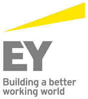

EY
Ernst & Young (known as EY) is a multinational professional services firm headquartered in London, United Kingdom. It was the third largest professional services firm in the world by aggregated revenue in 2012 and is one of the "Big Four" audit firms.
The organization operates as a network of member firms which are separate legal entities in individual countries. It has 190,000 employees and more than 700 offices in over 150 countries. It provides assurance (including financial audit), tax, consulting and advisory services to companies.
The firm dates back to 1849 with the founding of Harding & Pullein in England. The current firm was formed by a merger of Ernst & Whinney and Arthur Young & Co. in 1989. It was known as Ernst & Young until 2013, when it underwent a rebranding to EY. The acronym "EY" was already an informal name for the firm prior to its official adoption.
EY is the most globally managed of the Big Four firms. EY Global sets global standards and oversees global policy and consistency of service, with client work being performed by its member firms.
Each EY member country is organized as part of one of four areas. This is different from other professional services networks which are more centrally managed.
The four areas are:
- EMEIA: Europe, Middle East, India and Africa
- Americas
- Asia-Pacific
- Japan
Each area has an identical business structure and one management team that is led by an Area Managing Partner who is part of the Global Executive board. The aim of this structure is to effectively cater for an increasingly global clientele, who have multinational interests.
EY has four main service lines and share of revenues in 2011:
- Assurance Services (46%): Financial Audit (core assurance), Financial Accounting Advisory Services, Fraud Investigation & Dispute Services, and Climate Change & Sustainability Services.
- Tax Services (26%): Transfer Pricing, International Tax Services, Business Tax Compliance, Human Capital, Customs, Indirect Tax, Tax Accounting & Risk Advisory Services, Transaction Tax.
- Advisory Services (19%): Actuarial, IT Risk and Assurance, Risk, and Performance Improvement.
- Transaction Advisory Services (TAS) (9%): deals with companies' capital agenda – preserving, optimizing, investing and raising capital.